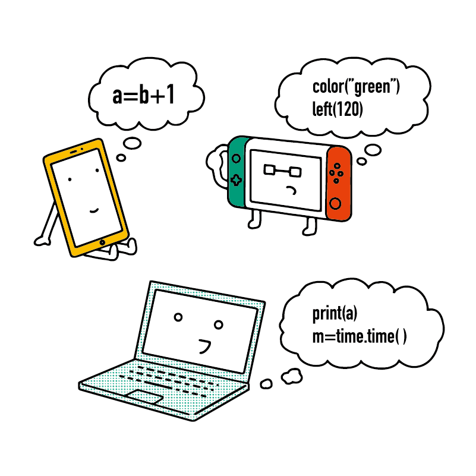

そもそも「パソコン」って？
実際にパソコンを触り、操作方法を学びましたが、パソコン（PC）とは何なのでしょうか？また、スマホとはどのような違いがあるのでしょうか？
少しだけ、仕組みや知識を確認しておきましょう。
「コンピューター」とは
パソコンはコンピューターの一種です。また、スマホやタブレット、ゲーム機もコンピューターの一種です。
コンピューター（computer）は日本語で「計算機（けいさんき）」とも呼ばれます。
たとえば電卓アプリを利用する場合は「計算」をしていることが分かりやすいと思います。一方で、動画を観たり、ゲームをしたり、Web サイトを閲覧したり……こういった使い方をする時に「計算」が行われているとは思えないかもしれません。
しかし、コンピューターは文字や画像、動画、アプリなどといったすべての情報（データ）を数値として記録・解釈しています。たとえば今、あなたが読んでいるこの N 予備校の教材も、コンピューターの内部では数値として記録されているものなのです。
それゆえ、読み込みや表示、入力などといったすべての操作において、私たちが気づかないところで膨大な計算が行われています。
「パソコン」とコンピューターの歴史
「パソコン」はパーソナル・コンピューターの略です。英語で書くと Personal Computer、つまり「個人用のコンピューター」という意味になります。
なぜ「個人」という言葉が出てくるのでしょうか。その理由はコンピューターの歴史にあります。
近代のコンピューターが発明されたのは 1940 年代のことでした。
この当時のコンピューターは 1 つの部屋を丸ごと使うほど巨大なもの で、大人数で操作する必要がありました。
また、これらのコンピューターはとても高価な業務用製品であり、大企業や研究機関、政府などが保有するものでした。経済的にも場所的にも、個人が所有することは難しかったのです。
しかし、1970年代になると、小型化のための技術が急激に発展します。
この頃から低価格かつ小型のコンピューターが続々と登場するようになり、個人でもコンピューターを所有できるようになりました。
それに伴い、パーソナル・コンピューター、つまり「個人用のコンピューター」という言葉が使われるようになりました。
 1970 年代に発売された小型コンピューター（Apple II）（Marco Verch 氏撮影）
1970 年代に発売された小型コンピューター（Apple II）（Marco Verch 氏撮影）
情報処理学会が公開している コンピュータ博物館 というサイトに、歴史的なコンピューターの解説や画像が掲載されています。
やや専門的な内容ですが、興味がある方は読んでみると楽しいかもしれません。
スマホとパソコンの違い
現在のスマホやタブレットは、技術的に見るとパソコンを小型化したものです。
しかし、単なる「小型版」「大型版」というわけではなく、それぞれの得意分野・不得意分野があります。
スマホやタブレットに向いていること
移動しながらの使用
//TODO 抽象イラスト
当たり前ですが、パソコンを移動しながら使う事はできません。椅子か机、最低でもどちらかが必要になるでしょう。
小型・軽量と操作のしやすさを重視しているスマホは、移動しながらの利用に向いています。
直感的な操作
スマホはタッチパネルを搭載しており、画面を触ることで操作できます。
直感的に操作できるため、初心者でもかんたんに習得できます。
写真や動画の撮影
スマホは写真や動画を撮影し、その場で編集できます。
複雑な編集が必要ないなら、パソコンよりも手軽です。
コンテンツの閲覧
電子書籍などのコンテンツを閲覧する場合、タッチ操作ができるスマホは非常に便利です。
パソコンに向いていること
複数の作業を同時に行うこと
基本的にスマホでは1つのアプリしか表示できませんが、パソコンは複数のアプリを同時に並べて表示できます。
そのため、ネットで調べ物をしながらレポートを書いたり、データを見ながらプレゼン資料を作ったりといった作業がスムーズにできます。
 パソコンで調べ物をしながら文章を書く様子
パソコンで調べ物をしながら文章を書く様子
長文や複雑な文章の入力
キーボードは一見すると入力が難しそうに見えますが、慣れるとスマホのフリック操作よりも高速かつ効率的に入力できるようになります。
また、アルファベットや記号などもスムーズに入力できるので、英語や記号が混在するような複雑な文章の入力もかんたんです。
さらに、スマホでは画面の一部がキーボードで隠されてしまいますが、パソコンでは画面を広々と使えます。
学校のレポートや仕事の資料など、長文の入力が必要な場面では「画面の広さ」が威力を発揮します。
それでも、パソコンに不慣れならスマホのほうが早いのでは、と思う方も多いかもしれません。
たとえば、自転車に乗れないうちは転んでしまうため、歩いたほうが早くて楽だと感じてしまいます。しかし、一度自転車に乗れるようになると、自転車の方が圧倒的に速く移動できます。
スマホとパソコンもこれと同じ関係です。最初は大変ですが、慣れていくことでその利便性を実感できるようになるでしょう。
精密かつ複雑な操作
特に画像加工や文章の選択などにおいて、スマホのタッチパネルでは狙った場所をきちんと操作できないことがあるのではないでしょうか。
これはタッチパネルは直感的である反面、厳密・精密な操作を苦手としているためです。
一方、パソコンでは、マウスとキーボードを組み合わせることによってドット単位で精密な操作ができます。
また、必要であればペンタブレットなどの機器を組みわせることもできます。
さらに、キーボードを用いた「ショートカットキー」操作が用意されていることもあり、複雑な操作を高速でこなすことができます。
マウスとキーボードで精密な操作をする様子
重い処理
コンピューターにおいて、高性能なパーツは消費電力も大きくなります。
スマホは持ち運びを前提に作られているため、バッテリーも小型にする必要があります。
そのため、バッテリーの容量が少なくなってしまい、省エネなパーツしか使えません。
一方、パソコンは比較的大きなバッテリーが使えるほか、コンセントから直接電源を供給することもできます。
スマホと比べると、圧倒的に高性能なパーツを搭載できるため、画像や動画などの制作や、3D ゲームといった重い処理はパソコンのほうが有利です。
プログラミング
現在、スマホでは実用的なプログラミング環境が用意されていません。
また、プログラムを書いていく上でもキーボードと大きな画面が不可欠であり、プログラミングをするにはパソコンを使う必要があります。
まとめ
- パソコン（PC）は「パーソナルコンピューター」の略。
- スマホとパソコンはどちらもコンピューター。似ている部分もあるが、それぞれ得意分野が違う。